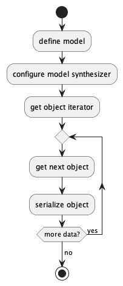
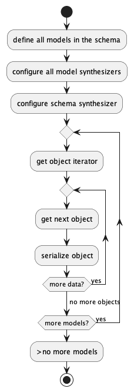
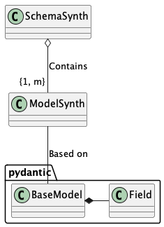
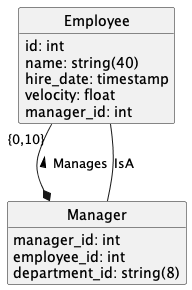
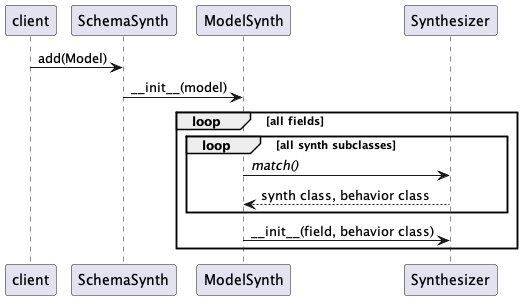

Containers¶
The goal is to build a Data Generator App for a specific problem domain. This app can used based on the synth data tools. The app’s responsibilities are:
to configure the synth data tools,
and persist the synthesized data in some useful serialization format.
Let’s pretend the problem domain is some HR-related database. The overall work is all HR related.
The structure will look like this:
![[HR Data App]
[HR Schema]
[Serialization]
package "Synthetic Data Tool" {
[SynthesizeModel]
package "synths" {
[field synth]
}
[SynthesizeModel] *- [field synth]
}
package "Pydantic" {
[BaseModel]
[Field]
[BaseModel] *- [Field]
}
[HR Data App] --> [HR Schema] : defines
[HR Data App] --> [Serialization] : uses
[HR Data App] --> [SynthesizeModel] : uses
[HR Schema] *-- [BaseModel] : contains
[BaseModel] -- [SynthesizeModel] :< "creates objects"](_images/plantuml-d7692ba06a32f3ff27fb6d1545623d27be4385ec.png)
The HR Data App will produce synthetic data for the data model defined in the HR Schema.
It can be helpful to define the HR Schema as a separate, reusable Python module.
The Pydantic BaseModel class definitions can be used by an application.
The additional details used by the Synthetic Data Tools have no impact on other Pydantic features.
The HR Schema conatins one or more Pydantic BaseModel definitions.
The HR Data App uses the Synthetic Data Tools to build objects for classes in the HR Schema.
Each HR Schema class will have a parallel SynthesizeModel object that is an iterator over the desired objects.
These objects can then be serialized.
The Serialization component covers the endless variety of file formats:
CSV
ND JSON
YAML
Spark
Kafka
SQL
etc.
Because the generated objects are Pydantic BaseModel subclasses, all of the facilities of Pydantic are available for conversion and serialization.
The details of the Synthetic Data Tool are covered in the Synthetic Data Tool Components section. To provide context, we’ll look at the Data Generator App first.
Data Generator App¶
The Data Generator App will be a Python application (or script) that creates and persists synthetic data.
For isolated data sets (without a complex multi-collection schema) the processing looks like this:

For SQL data, there are often multiple tables that require foreign key copies of primary key values. In these cases, the processing will be somewhat more complicated:

There is no requirement to process the tables in any particular order. Once the schema synthesizer has been populated, the various model generators can all be run independently.
The data generation depends on a Pydantic BaseModel.
Model Definition¶
The BaseModel definition is based on Pydantic, with some very important extensions.
The model definitions are focused on JSON Schema definitions.
This means the Pydantic json_schema_extra attribute of
a Field definition are used heavily to provide needed details.
The baseline Pydantic annotations define data types and provide very broad domain definitions within those types. A data domain has a number of aspects:
The data type is often chosen from a small set of base types, including integer, float, string, date-time, and boolean. More complicated types are often built from these.
The domain is often a subset of the available values:
Numbers have an upper and lower boundary.
Strings can have a pattern or a defined format. They can also have minimum and maximum lengths.
Date-time values often have an upper and lower boundary.
These domain definitions need to be extended to cover a number of cases:
String sizes and patterns. Pydantic and JSON Schema provide for numerous defined formats. For cases that extend beyond these, regular expression patterns are also supported. The patterns don’t provide any information on the distribution of sizes for strings, or the distribution of choices within a regular expression.
Numbers and their distributions. While a minimum and a maximum are essential for data validation, a distribution or histogram is required to produce realistic data.
Dates and DateTimes have the same problem numbers have: they require a more complete domain definition including a distribution or histogram.
Enumerated values are supported directly by JSON Schema. However, a distribution histogram is also required.
Benford’s Law is an interesting facet of some measurements. See https://mathworld.wolfram.com/BenfordsLaw.html. This biases the distribution of leading digits.
Foreign keys in a relational data model must match primary keys defined elsewhere in the schema. This means the foreign key synthesizer is limited to values chosen from a pool of values defined by a different synthesizer in a different model of the schema.
Optional values are a more subtle aspect of a domain definition. Optionality takes two forms: domain-indepedent null values, and domain-specific null values. A domain-indepedent null is the SQL
NULLor PythonNonevalue. A domain-specific null is a coded value, like social security number999-99-9999that indicates some sort of missing or not-applicable value.
All of these aspects require JSON Schema extensions. Not all are currently implemented, but the architecture provides a useful framework for adding features.
Schema Definition¶
A Schema is a collection of models. For an application where there’s only one model, or the models are independent of each other, the schema can be safely ignored.
For SQL database design, however, requires a schema. Some tables have foreign keys that are primary keys on other tables. The schema is a collection of model definitions, allowing the cross-references to work.
It looks like this:

What’s essential is the way a ModelSynth depends on an underlying Pydantic BaseModel.
The Synthetic Data Tools rely on the rich set of type annotations in Pydantic.
These are used to validate the output from Synthesizers, assuring the data is valid.
This also makes Pydantic’s rich set of serialization options available, permitting easy creation of newline-delimited JSON and CSV.
Further – with some care – the Pydantic model can be mapped against a separate SQL-based model to permit direct interaction with SQL databases in the case that’s helpful.
Here’s an example data model.

A Manager manages a number of Employees. A Manager IS an Employee, also. This leads to complex SQL requiring two separate joins between manager and employee to get direct reports.
Here’s the definition in Python.
"""
Sample Pydantic Class Definitions
"""
import datetime
from typing import Annotated
from pydantic import BaseModel, Field
class Employee(BaseModel):
id: Annotated[
int,
Field(json_schema_extra={"sql": {"key": "primary"}}),
]
name: Annotated[
str,
Field(
max_length=40, json_schema_extra={"domain": "name"}
),
]
hire_date: Annotated[
datetime.datetime,
Field(ge=datetime.datetime(2021, 1, 18)),
]
velocity: Annotated[
float,
Field(
ge=2,
le=21,
json_schema_extra={"distribution": "normal"},
),
]
manager: Annotated[
int,
Field(
json_schema_extra={
"sql": {
"key": "foreign",
"reference": "Manager.id",
}
}
),
]
class Manager(BaseModel):
id: Annotated[
int,
Field(json_schema_extra={"sql": {"key": "primary"}}),
]
employee_id: Annotated[
int,
Field(
json_schema_extra={
"sql": {
"key": "foreign",
"reference": "Employee.id",
}
}
),
]
department_id: Annotated[str, Field(max_length=8)]
Here are the annotations for each field in the Employee table:
id. The fundamental type is
int. Thejson_schema_extrasettings provide additional SQL-focused features, specifically, it’s role as a unique primary key.name. The fundamental type is
strwith length limit of 40. Thejson_schema_extrasettings define a narrow domain of “name”.hire_date. This is a
datetimewith a lower limit of 2021-Jan-18.velocity. This is a
floatvalue with a range of 2 to 21. Thejson_schema_extradefines it to have a normal distribution. Without additional details, the mean will be the midpoint of the domain and the standard deviation will be \(\tfrac{1}{6}\) of the range. The defined limit values are unlikely to appear.manager. This is an
intfield. Thejson_schema_extrasettings provide additional SQL-focused features, specifically, it’s a foreign key to theidattribute of theManagertable.
The primary keys create pools of candidate values.
The foreign key references select values from the pools.
The SQL “cardinality” of the relationship is defined by the number of rows in each Model.
If the median cardinality is 5 employees per manager, then, the employee table must have 5 times as many rows as the manager table.
The Manager table avoids introducing anything new.
Class Collaboration¶
A SchemaSynth is a collection of ModelSynth instances.
As shown above, in Schema Definition, the ModelSynth is associated with the Pydantic BaseModel.
For each field in the BaseModel, the ModelSynth contains a Synthesizer instance for each field.
A Synthesizer has one of two behaviors: Independent or Pooled.
When the client wants data objects (that may have noise) or model objects (that cannot have noise)
it will create a DataIter or ModelIter object to emit synthetic data.
The following diagram provides some details of the relationships:
![abstract class Behavior
class Independent {
prepare()
}
class Pooled {
prepare()
}
class Synthesizer {
model: Model
field: Field
behavior: Behavior
noise: float
__init__(Model, Field, Behavior)
prepare()
value_gen()
noise_gen()
}
class ModelSynth {
model: Model
__init__(Model)
data_iter()
model_iter()
}
class SchemaSynth {
add(Model)
}
class ModelIter {
__init__(ModelSynth)
iterator(noise=0)
next() : Model
}
class DataIter {
__init__(ModelSynth)
iterator(noise)
next() : dict[str, Any]
}
SchemaSynth o-- "1:m" ModelSynth : Contains
ModelSynth *-- "1:m" Synthesizer : Contains
Synthesizer -- Behavior : Strategy
Behavior <|-- Independent
Behavior <|--Pooled
ModelSynth --> DataIter : creates
ModelSynth --> ModelIter : creates
DataIter <-- ModelIter : uses
DataIter --> ModelSynth : uses
ModelIter --> Model : Creates Synthetic Instances
DataIter --> dict : Creates Synthetic Candidates
class "dict[str, Any]" as dict {
str
Any
}](_images/plantuml-cf6127fc8f472d3742f9b9b32ce47deb7d8f031a.png)
The first step in the processing seeks to locate appropriate Synthesizer for each field.
This is a class-level search using a class-level match() method of each Synthesizer class.
The first match (working from the bottom to the top of the hierarchy) is then used for the field.

The second step is an initialization of the Behavior by the Synthesizer.
There are two cases, defined by the Behavior class hierarchy:
Independent. These
Synthesizersare lazy and generate values as needed. The behavior’snext()method is used to create individual field values from a Synthesizer.![participant client
participant ModelSynth
participant DataIter
participant Synthesizer
participant Independent
group ~__init__()
ModelSynth -> Synthesizer : ~__init__(self)
Synthesizer -> Independent : ~__init__(self)
end
client -> ModelSynth : data_iter(noise)
ModelSynth -> DataIter : ~__init__(self, noise)
loop all fields
ModelSynth -> Synthesizer : prepare()
Synthesizer -> Independent : prepare()
end
ModelSynth --> client : DataIter instance
loop rows
client -> DataIter : next()
loop all fields
DataIter -> Synthesizer : next()
Synthesizer -> Independent : next()
Independent -> Synthesizer : value_gen()
Synthesizer --> Independent : Any
Independent --> Synthesizer : Any
Synthesizer --> DataIter : Any
alt noisee?
DataIter -> Synthesizer : noise_gen()
Synthesizer --> DataIter : noise
end
end
DataIter --> client : dict[str, Any | noise]
end](_images/plantuml-78fb4d14cb1f11088df8bce7ae3818f6946f0a85.png)
Pooled. These
Synthesizersmust initialize a pool of unique values. The vaues are consumed to create primary and foreign keys. For PK’s thenext()method steps through the collection of unique key values. The FK’s work via achoose()method, permitting reuse of primary key values.![participant client
participant ModelSynth
participant DataIter
participant Synthesizer
participant Pooled
group ~__init__()
ModelSynth -> Synthesizer : ~__init__(self)
Synthesizer -> Pooled : ~__init__(self)
end
client -> ModelSynth : data_iter(noise)
ModelSynth -> DataIter : ~__init__(self, noise)
loop all fields
ModelSynth -> Synthesizer : prepare()
Synthesizer -> Pooled : prepare()
loop all rows in pool
Pooled -> Synthesizer : value_gen()
Synthesizer --> Pooled : Any
Pooled -> pool : append()
end
end
ModelSynth --> client : DataIter instance
loop rows
client -> DataIter : next()
loop all fields
DataIter -> Synthesizer : next()
Synthesizer -> Pooled : next()
alt PK case
Pooled -> pool : ~__next__()
pool --> Pooled : Any
Pooled --> Synthesizer : Any
Synthesizer --> DataIter : Any
else FK case
Pooled -> pool : random.choice()
pool --> Pooled : Any
Pooled --> Synthesizer : Any
Synthesizer --> DataIter : Any
alt noisee?
DataIter -> Synthesizer : noise_gen()
Synthesizer --> DataIter : noise
end
end
end
DataIter --> client : dict[str, Any | noise]
end](_images/plantuml-eaa8003b9fa88db3e107a197c0f82feca1a2840f.png)
The the Data Generator App section for the sequence of operations the client uses. Here’s the summary:
Create a
SchemaSynthfull ofModelSynthinstances. This will prepare eachModelSynth. ForPooledsynthesizers, this will initialize the pool.Use the
data_iter()(ormodel_iter()) to initialize an iterator overdict[str, Any]orModelinstances. Since theModelIterdepends on theDataIter, theDataItercollaboration is foundational.The noise parameter – if present – is saved to replace valid values with noise.
Use the
next()method to get a a nextdict[str, Any](which can be used to creaete aModelinstance.)For Independent, the value is generated as needed.
For Pooled, the sequence of PK’s comes from the pool. The FK references are chosen randomly from the pool.
Noise is injected by the DataIter if the
noisethreshold is non-zero.